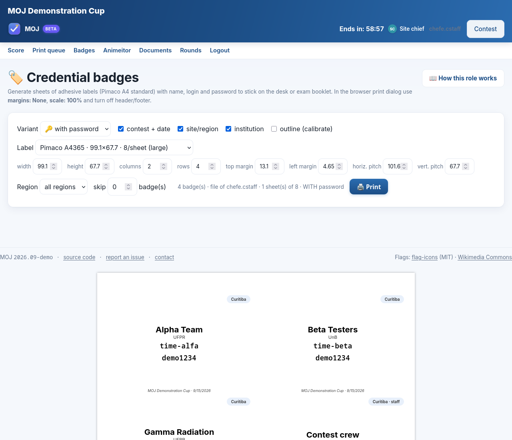
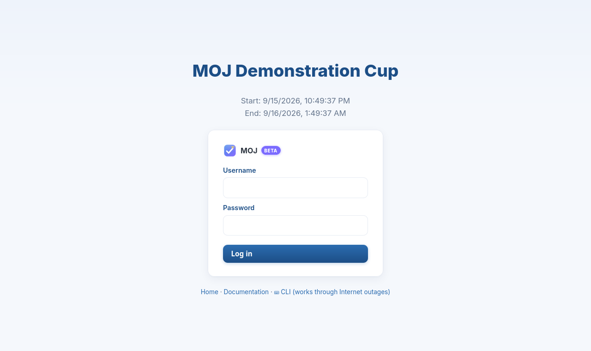
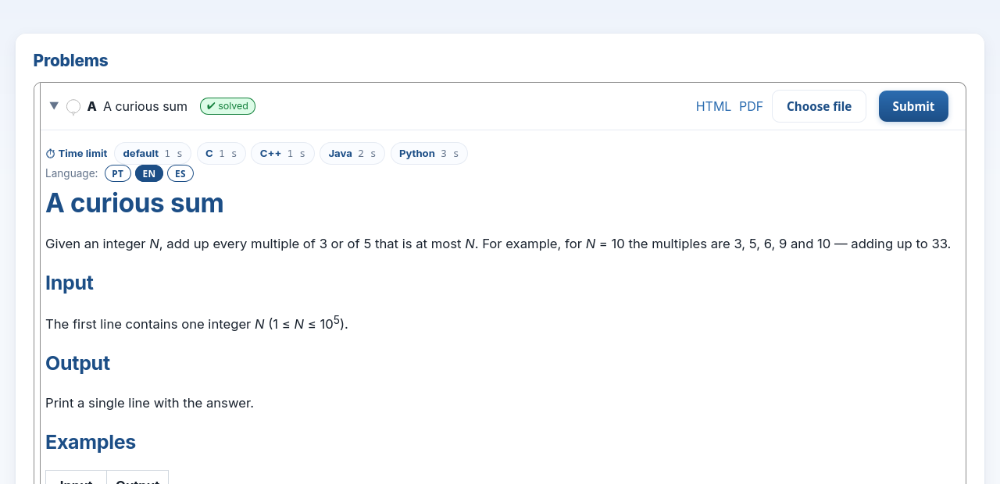
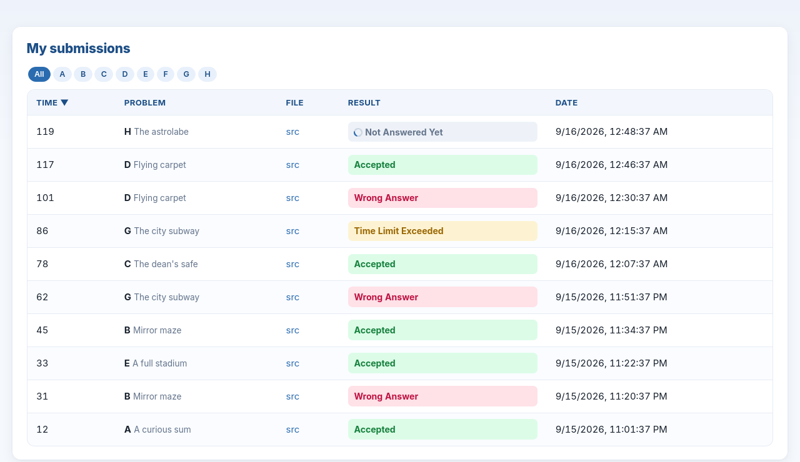
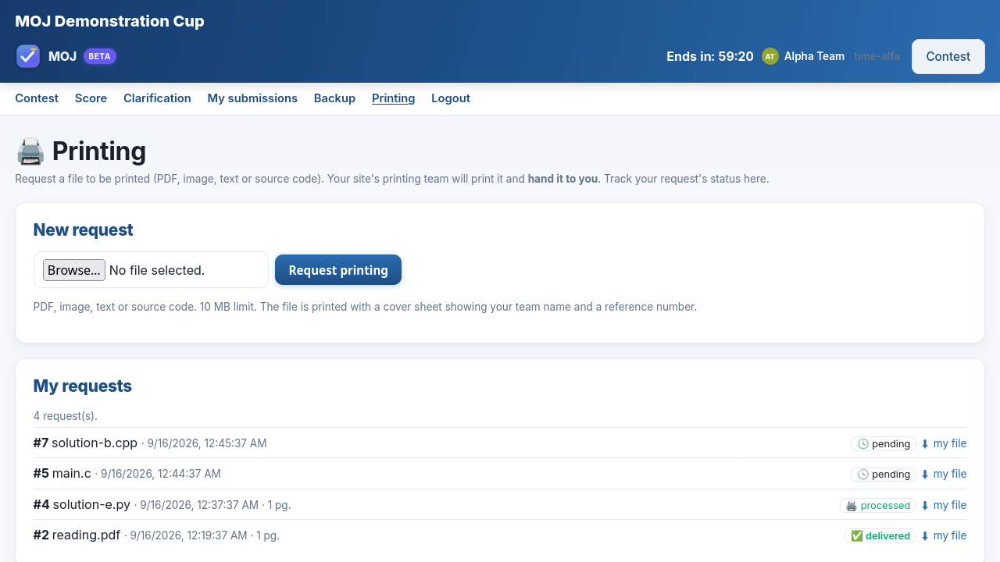
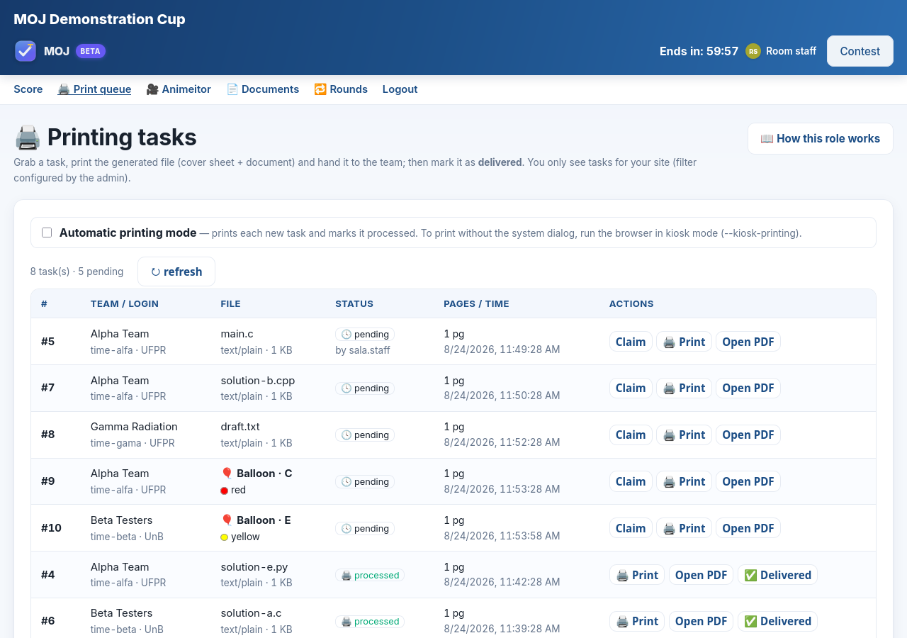
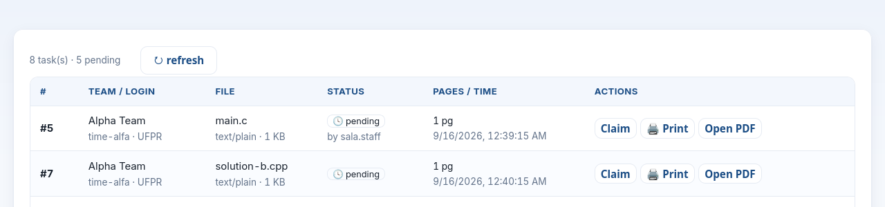
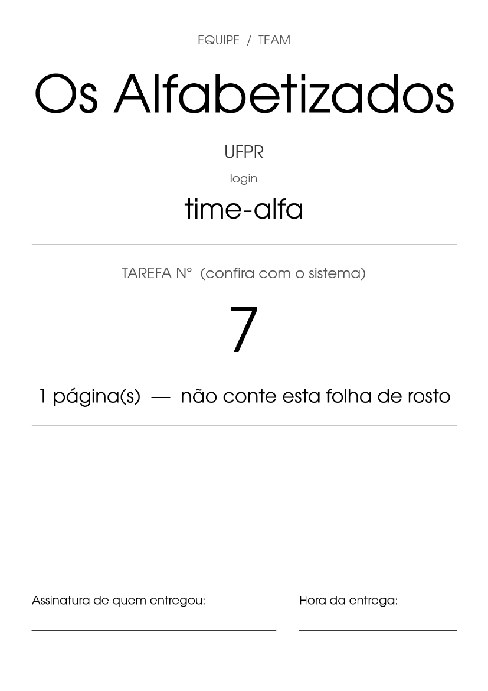
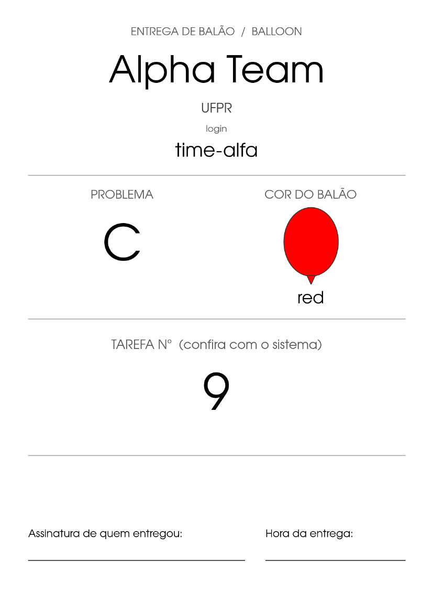
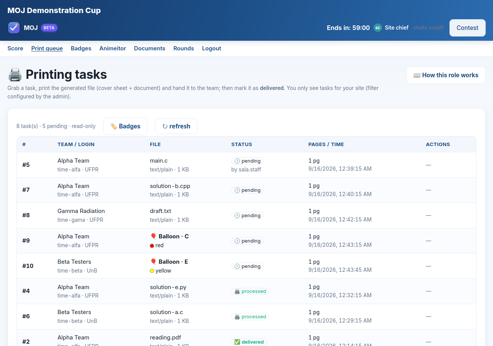

Guion de entrenamiento para las cuentas .cstaff y .staff
Maratón de Programación — competencia de ensayo mdp-teste-2026
Este guion toma unos treinta minutos y sirve para una sola cosa: hacer que su sede pase una vez por todo lo que va a ocurrir el día de la competencia. Un equipo entra, resuelve un problema, se equivoca a propósito y pide una impresión. Usted ve llegar el pedido, lo imprime, lo entrega y ve nacer el globo. Nada de esto cuenta — la competencia se llama ensayo justamente por eso.
Lo que falla el día de la competencia casi nunca es el juez. Es la impresora sin papel, la ventana emergente que el navegador bloqueó, la etiqueta que no entra, el globo del color equivocado. Todo eso aparece aquí, hoy, cuando todavía hay tiempo de resolverlo con calma.
<sede>.cstaff y <sede>.staff — por ejemplo,
bolapa.cstaff y bolapa.staff;https://mdp-teste-2026.moj.naquadah.com.br/| Cuenta | En el ensayo |
|---|---|
.cstaff — jefe de sede | Le entrega la credencial al equipo y acompaña.
Ve la cola, pero no toma ni imprime: esas acciones son de .staff. |
.staff — equipo de sala | Toma la tarea, la imprime y lleva el papel y el globo hasta la mesa. Es la cuenta que trabaja. |
| el equipo | Una cuenta de equipo de su sede, prestada para el ensayo. |
Si todavía no leyó la guía de su rol, léala antes: ahí se explica cada botón, y aquí solo los usamos. Guía del jefe de sede · Guía del equipo de sala.
.cstaff: entre a la competencia y abra 🏷️ Badges. Esa pantalla lista los equipos de su sede con su usuario y su contraseña, listos para imprimir en etiquetas. Elija un equipo para el ensayo y anote su credencial.

Si la lista sale vacía, deténgase aquí y avise a la organización: el alcance de su sede no está configurado, y el día de la competencia usted se quedaría sin las credenciales.
Equipo: en la otra ventana, abra la dirección del ensayo y entre con la credencial del paso 1.

En esta competencia no hay editor en el navegador, y es a propósito: así es en el Maratón. El equipo escribe el programa en un editor de la máquina, compila en la terminal y envía el archivo ya listo.
El problema A — Ola Mundo no lee nada e imprime una línea. Tome el programa del Apéndice A en el lenguaje que prefiera, guárdelo en un archivo y envíelo: haga clic en la línea del problema, elija el archivo y presione Submit.

El veredicto llega solo en pocos segundos, sin recargar la página. Lo que usted quiere ver es Accepted, y la línea del problema cambia de color allá arriba.

Ahora mande tres programas con errores, uno de cada tipo. La idea es que la sede reconozca cada veredicto cuando aparezca el día de la competencia, y que sepa que ninguno de ellos significa que el sistema esté fallando. Los programas están en el Apéndice B.
| Envíe | Al problema | Va a ver | Quiere decir |
|---|---|---|---|
| la cuenta cambiada | B — Soma 2 | Wrong Answer | El programa corrió hasta el final, y la respuesta no es la esperada. |
| la salida con error | C — Soma N | Runtime Error | El programa se rompió mientras corría. |
| el ciclo infinito | D — EOF | Time Limit Exceeded | El programa tardó más de lo que el problema permite. |
En una competencia, el veredicto es todo lo que el equipo recibe: ni qué prueba falló, ni el diff, ni puntaje parcial. Es a propósito — las pruebas son material de examen.
Equipo: abra la pestaña 🖨️ Printing, elija el archivo que acaba de enviar y presione Request printing. El pedido aparece abajo, como pending.

Un detalle que conviene aprender desde ahora: el equipo solo ve sus propios pedidos, y el número que aparece al lado es el mismo que sale impreso en la carátula. Con ese número ustedes verifican, en la mesa, que el papel llegó al equipo correcto.
.staff: abra 🖨️ Print queue. El pedido del paso 5 está ahí, arriba de todo.

El ciclo tiene tres pasos, siempre en el mismo orden:

De la impresora sale una carátula seguida del documento del equipo. La carátula trae el nombre del equipo, la universidad, el usuario y el número de la tarea, con una línea para firmar la entrega.

El texto de esa hoja sale en portugués en todas las sedes, y es a propósito: así la mesa de entrega reconoce el mismo papel en todo el continente. El nombre del color del globo viene en dos idiomas, justamente para que coincida con el globo físico.
¿Se acuerda del Accepted del paso 3? Se convirtió en una tarea de globo, y cae en la misma cola, marcada con 🎈 y con el color del problema. Y fíjese en cuándo nace: el globo se crea solo cuando alguien de la sede abre la cola. Si nadie la abre, no existe — y eso no es que el sistema esté atrasado.

Trate el globo como cualquier otra tarea: Claim, Print y Delivered cuando el globo llegue a la mesa. Lleve la hoja junto con el globo — esa hoja es la prueba de la entrega.
Cada color pertenece a una letra, y la misma letra tiene el mismo color en todas las sedes. Compare los colores de sus globos con la hoja antes de que empiece la competencia.
En una competencia llena, detenerse en cada diálogo de impresión es lo que atrasa el salón. Para eso existe el modo automático: la casilla arriba de la cola. Con ella encendida, cada tarea nueva se reserva, se imprime y se marca sola. A ustedes solo les queda la caminata hasta la mesa.
Para que el papel salga sin ningún diálogo, el navegador tiene que estar en modo kiosk printing. Cierre Chrome y ábralo otra vez así:
Linux google-chrome --kiosk-printing https://mdp-teste-2026.moj.naquadah.com.br/contest/staff/ Windows (menú Inicio → clic derecho en Chrome → Propiedades → Destino) "C:\Program Files\Google\Chrome\Application\chrome.exe" --kiosk-printing macOS open -a "Google Chrome" --args --kiosk-printing
Con Chrome en ese modo, encienda la casilla, pida otra impresión desde la ventana del equipo y no toque nada. El papel sale solo. Así es como funciona el salón el día de la competencia.
Pruebe esto hoy. El modo kiosk usa la impresora que el sistema tenga como predeterminada, y ya no pregunta nada más. Si la predeterminada es la equivocada, usted se entera ahora — y no con treinta equipos en la cola.
.cstaff: abra la misma cola. Usted ve todo lo que ve su equipo, con una diferencia: la columna de acciones queda vacía. No es un permiso que falta por error, es como está diseñado el rol — quien toma e imprime es el equipo de sala.

Ya que está ahí, confirme las dos cosas que solo usted alcanza a ver. La primera: la cola muestra los equipos de su sede y nada más. La segunda: las etiquetas del paso 1 coinciden con quienes se van a sentar en el salón.
Marque cada línea solo después de haberla visto ocurrir:
| Punto | |
|---|---|
| ☐ | Las etiquetas de mi sede abren, y la lista tiene a mis equipos. |
| ☐ | Un equipo entró con la credencial de la etiqueta. |
| ☐ | Un envío volvió Accepted. |
| ☐ | Vi los tres errores: Wrong Answer, Runtime Error y Time Limit Exceeded. |
| ☐ | Un pedido de impresión salió en la impresora, con su carátula. |
| ☐ | Las ventanas emergentes de este sitio están permitidas en el navegador de la sede. |
| ☐ | El modo automático imprimió solo, con Chrome en kiosk. |
| ☐ | La tarea de globo apareció y el color coincide con los globos que tenemos aquí. |
| ☐ | Marqué una tarea como Delivered. |
| ☐ | La impresora predeterminada del sistema es la del salón. |
| Lo que usted ve | Qué es |
|---|---|
| Presioné Print y no pasó nada | El navegador bloqueó la ventana emergente. Permita las ventanas emergentes de este sitio y presione otra vez — la tarea sigue ahí, sin marca de impresa. |
| La cola está vacía | O nadie pidió nada, o el alcance de su sede no coincide con ningún equipo. Pídale al jefe de sede que abra las etiquetas: si también salen vacías, es el alcance. |
403 al tomar o imprimir | Usted está en la cuenta .cstaff.
Tomar e imprimir son de la cuenta .staff. |
| La credencial no entra | Revise mayúsculas y minúsculas, y que la etiqueta sea de su sede. Si sigue fallando, eso es para la organización — anote el usuario y avise. |
| El veredicto tarda | Mientras dice Not Answered Yet, el envío está en la cola del juez. En una competencia llena eso toma segundos, no minutos. |
| Salió papel sin carátula | Alguien imprimió con Open PDF, que abre sin imprimir ni marcar. El botón del flujo es Print. |
| Un programa que se rompió volvió Time Limit Exceeded | Pasa. El límite de estos problemas es cortísimo, y guardar la memoria de un proceso que reventó ya lo pasa. El reloj se acaba antes de que el juez mire por qué murió. |
Uno por problema, en el lenguaje que su sede prefiera. Guárdelos con el nombre indicado: en Java, el nombre del archivo tiene que ser el nombre de la clase pública.
/* sol.c */
#include <stdio.h>
int main(void) { printf("Ola Mundo\n"); return 0; }
# sol.py
print("Ola Mundo")
// Main.java
public class Main {
public static void main(String[] args) { System.out.println("Ola Mundo"); }
}
/* sol.c */
#include <stdio.h>
int main(void) {
long a, b;
scanf("%ld %ld", &a, &b);
printf("%ld\n", a + b);
return 0;
}
# sol.py import sys a, b = map(int, sys.stdin.read().split()) print(a + b)
/* sol.c */
#include <stdio.h>
int main(void) {
long n, x, suma = 0;
scanf("%ld", &n);
for (long i = 0; i < n; i++) { scanf("%ld", &x); suma += x; }
printf("%ld\n", suma);
return 0;
}
# sol.py import sys nums = list(map(int, sys.stdin.read().split())) print(sum(nums[1:1 + nums[0]]))
/* sol.c */
#include <stdio.h>
int main(void) {
long x, cuantos = 0;
while (scanf("%ld", &x) == 1) cuantos++;
printf("%ld\n", cuantos);
return 0;
}
# sol.py import sys print(len(sys.stdin.read().split()))
El programa corre hasta el final, imprime un número, y el número está mal.
/* wa.c — multiplica en vez de sumar */
#include <stdio.h>
int main(void) {
long a, b;
scanf("%ld %ld", &a, &b);
printf("%ld\n", a * b);
return 0;
}
# wa.py import sys a, b = map(int, sys.stdin.read().split()) print(a * b)
El programa no llega al final: se detiene a la mitad y anuncia una falla. Es lo que pasa de verdad cuando un arreglo se desborda, cuando un divisor resulta ser cero o cuando una excepción no se atrapa.
/* rte.c */
#include <stdio.h>
#include <stdlib.h>
int main(void) {
long n;
scanf("%ld", &n);
exit(1); /* salir con algo distinto de cero significa "salió mal" */
}
# rte.py import sys n = int(sys.stdin.readline()) sys.exit(1)
El programa nunca termina. El juez lo corta y devuelve el veredicto.
/* tle.c */
int main(void) { while (1) { } return 0; }
# tle.py
while True:
pass